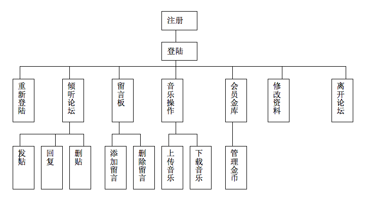

实验一 —— 网站需求分析
实验目的：
选择某一行业中的一家网站，确认网站开发主体需求，明确网站用户需求和网站定位。
实验内容与要求：
选具体的一个网站集资料，进行需求分析。
1、背景分析——目标网站所处行业的概要分析，目标网站的基本概况（经营领域，面向的目标人群，业务类型，市场规模等）
2、掌握现状——目标网站的信息化基础（有无信息化应用，网站主要包含的模块，网站的受众主要有哪些？了解不同人群的具体特征和需求特点，网站的定位，包括网站界面设计风格，浏览特色，主题等等。）
3、具体分析该网站——根据第二点所提到的问题进行具体调查和分析，及经营中遇到的困惑和问题，已经开展应用的在应用过程中出现哪些问题。哪些方面的改进需求？
4、提交一份调查报告，包括上述几方面内容。分析总结要明确具体。
一、背景分析
1.2立项原因概述： 几乎所有人都喜欢音乐，原版歌曲是很多网站都能找到的，但是很多网友喜欢翻唱歌曲、伴奏以及自己创作歌曲，而且他们需要一个平台来做这方面的交流，这是一个很开阔的空间，需求大，但是这样的平台目前较少，很有发展空间。
1.3 可行性分析： 歌曲交流平台是一个广阔的空间，需求较大，从各类人群的生活方式看，各个阶层的人都或多或少有喜欢的音乐，这是一个目前看来非常稳定而持久的产业方向。
1. 网站概述：
2.1面向的用户人群：
各类人群，主要是青年人居多
2.2实现目标：
（1）能提供公告功能，让社区居民能实时了解《倾听》的最新状况
（2）系统运行要高效，费用尽量低，注重实用性。
（3）该网站提供一种更加方便、高效资源交流的工作方式。
（4）系统实现及时获取工作提供者的信息和工作申请者的信息，后台自动
地快速、准确地将两者进行匹配，得到最优匹配并及时反馈信息。
（5）最终为更多的歌友建立交流的平台，改变以往独唱独赏的弊端。
《倾听》音乐网包含下面几个模块：
重新登陆模块
主要功能：登录失败或注销后，重新登录。
论坛模块
主要功能：该模块用于各用户做交流用，用户登录后可以在论坛中发帖、 回帖。未登录用户可以以“游客”身份浏览帖子，但不能回帖和发帖。论坛管理员可以对帖子进行管理。
会员金币
主要功能：该模块主要是会员登录后，能每天领取一定的倾听币，上传歌曲的时候，上传者会设置下载所需要的倾听币，下载者下载则会扣除相应的倾听币。
留言模块
主要功能：该模块主要作用是为用户和管理员搭建一个交流平台，用户可以给管理员留言，提出建议或意见。必须先登录然后才能留言。管理员可以对留言进行回复和删除操作。
音乐上传下载模块
主要功能：该模块是《倾听》音乐网的核心功能模块，会员登录后上传和下载歌曲（主要是翻唱歌曲和伴奏），未登录用户只能浏览歌曲，不能下载和上传。管理员可以对歌曲进行管理。
会员资料修改模块
主要功能：用户登录后可以修改会员资料、身份认证、账户安全设
置等。
本系统最终实现后各部分的关系如下图所示：

2.3项目开发要求：
（1）项目开发规范统一：模块划分，代码编写均遵照命名规范文档；
（2）程序优化、安全并要有良好的可扩展性；
（3）用户界面简洁明了、操作简单实用；
（4）与用户保持良好的沟通，及时根据用户新的需求改善系统功能；
2.4 开发工具：
开发平台：Jsp+JavaBean+servlet+Sql Server
开发工具：Tomcat+Jdk+MyEclipse+Sql Server2008
开发周期：6个星期
2. 具体分析：
3.1 实现概述：
该系统主要实现了以MVC模式化开发为基础，CSS样式美化页面，JDBC数据库连接以进行注册、登录以及歌曲的上传下载等交互功能。
3.2 相关工作人员职能：
（1）职能： 系统管理者主要对用户的留言、论坛帖子等管理。系统维护者主要对系统出现的一些异常情况进行处理。
（2）具体工作：接受并处理工作提供者提供的工作；
接受并处理工作申请者的请求；
维护网站系统及硬件设施；
将工作中对系统的新要求反馈给开发者；
3.3 注册会员：
（1）描述：作为系统的使用者
（2）该用户需要的功能：
注册：用户名、密码、真实姓名或者具体单位名、身份证号、联系地址、联系电话、提供的工作类型
登录：用用户名和密码登录。
更改注册信息、上传下载资源。
可向管理员留言请求帮助或提出意见、建议。
注销登录，离站
3. 界面设计:
主界面初步设计如下：

5．数据库设计：（Sql Server）
五个表：
user表： 记录会员的基本信息（字段名有：ID，userName，password，identityCard，email，QTCoin，image）
forum表： 记录论坛的信息（字段名有：postId，postName，owner， createTime，responseNum，browseNum,noteContext）
toforum表： 记录论坛信息的回复信息（字段名有：responseId，userName，storeyId，responseMess，）
music表： 记录资源的内容（字段名有：musicName，uploadUser，uploadTime，downloadNum，QTCoin）
message表： 记录留言信息（字段名有：messageId，userName，messageTime，messageContext）
其中：forum表和toforum表通过“postId” ，“responseId”两个主键两个表相关联。


6．特别说明
6.1 系统的安全性：
保证管理者和注册用户的密码安全，数据库访问控制；
管理员应具有一定网络安全及防黑知识；
6.2 系统可维护性：
系统管理者须懂得一定的服务器应用、SQL数据库应用、硬件维护、IIS配置等方面的技能，必要时可以对其进行培训
6.3 系统的灵活性：
系统应该具有良好的功能可扩充性，以应对未来用户的更高的要求；
6.4 硬件需求：（首先考虑现有硬件条件）
管理员端：Windows 2000 server或以上
客户端： 建议IE5.0或以上
服务器： 存储各种数据，处理相应终端请求
中转器： 数据传输中转站，减小服务器压力
6.5 用户界面：
人性化、交互性强的网页形式，简单易用，简洁而不失大方，充分合理安排用户功能各种数据表格格式直观易操作，
6.6 数据管理能力要求：
本系统使用SQL server ，可利用其自带的各种功能进行管理。
对不同用户信息和其它信息分类存储，使用索引查找。
6.7 故障处理：
系统运行中难免出现一些故障，对此提出以下建议和要求：
（1）对用户提交的重要资料及时备份。（如：当用户修改注册资料时要及时更新系统资料备份，以便于系统崩溃后资料的正确恢复。）
（2）当系统数据库发生故障时，及时向用户返回相关故障原因。
（3）公开管理员电子邮箱，联系电话等，以便用户和管理员可以及时联系。
（4）做好数据库和服务器的日常维护工作，出现故障时可与开发者联系帮助解决。